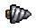
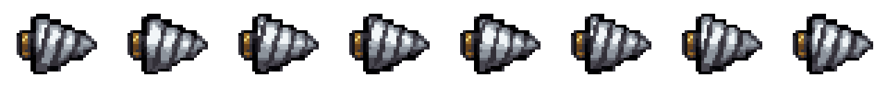
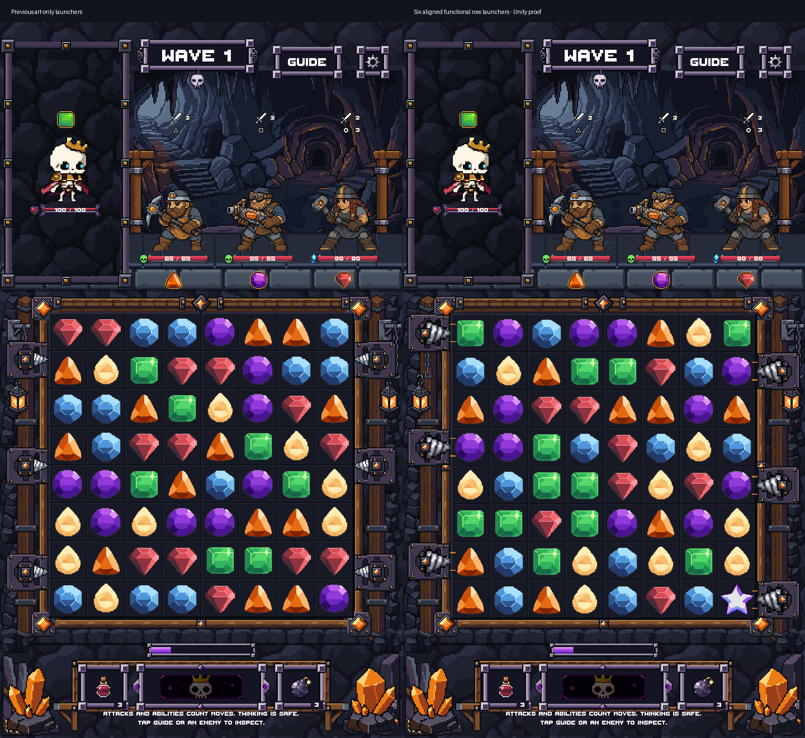

Three left launchers fire right. Three right launchers fire left. Every muzzle aligns with its target row.
This Unity capture uses the real BoardController, gems, charging, sequential clears, sockets, explosion and reload within the approved modular art assembly. The actor and HUD artwork in this proof remains its existing static snapshot. Separate production Game captures are below.
PixelLab-generated still and motion. Eight 40×32 frames, 12 opaque colors, binary transparency, fixed silhouette and tip. Native cleanup and LibreSprite round-trip verified. 12 PixelLab generations spent (154.2 remaining).



Random gem contents in the live proof differ from the prior static snapshot; board dimensions and artwork are unchanged.
The six-drill mechanic and art bindings are connected to Game. Full replacement of the older Ironvein environment remains a separate integration approval; it has not been silently applied here.
Verification report · Editable LibreSprite source · Native strip · Pixel checks